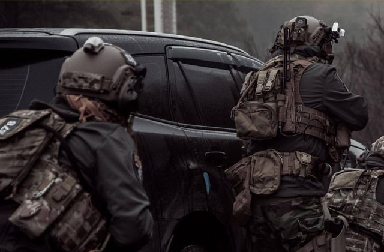
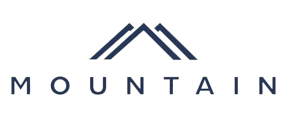

BlackSea коли ми з'явилися
Компанія BlackSea почала своє існування в 2010,швидкими темпами почала освоєння нового напрямку в Україні, а саме сектор кібербезпеки, але з плином часу стало зрозуміло, що захищати клієнта треба не тільки від мережевих загроз, а й зовнішніх.
Спектор наших послуг:
- Захист в КіберПросторі:
- Захист від будь-яких видів DDoS/DoS attack;
- Pentesting ваших ресурсів/охороних систем;
- Консультації з нашими спеціалістами з кібербезпеки;
- BodyGuard;
- SpecialGuard.
Участь BlackSea в різноматніх миротворчих місіях
BlackSea позіціонує себе не тільки як Cyber-military компанією а й ще одним регулятор і гарантом безпеки у світі
- Афганістан;
- ДР Конго;
- Косово;
- Кот-д'Івуар;
- Молдова (Придністров'я);
- Мексика.
Чи насправді BlackSea є лідером в сфері кібербезпеки?
Глобальна мережа Mountain запускає всі служби в кожному центрі обробки даних, тому наші користувачі мають узгоджену роботу скрізь — незалежно від того, перебувають вони в Чикаго чи Кейптауні. Це означає, що весь трафік клієнтів обробляється в центрі обробки даних, найближчому до його джерела, без зворотного зв’язку чи компромісів у продуктивності. А завдяки перевірці за один прохід система безпеки оптимізована та вбудована.

Що може зробити для вас мережа Mountain?
Щодня клієнти Mountain використовують нашу мережу для доставки додатків користувачам у всьому світі,захисту корпоративних активів за допомогою моделі Zero Trust і оптимізації архітектур WAN. Незалежно від того, чи зберігаєте ви об’єкти, розгортаєте безсерверний код або блокуєте кібератаки, усі наші можливості безпеки та продуктивності поширюються глобально, що робить конфігурацію простою.